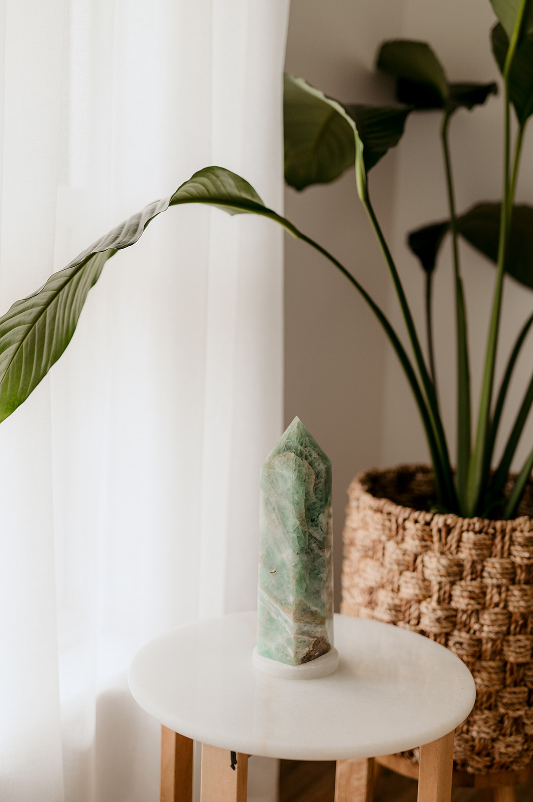

— the quiet current that connects body, mind and spirit. In Chinese medicine, Qi is the force that moves, nourishes and sustains us, creating harmony when it flows freely.
It is breath. It is movement. It is life.
At its heart, Qi is the art of returning to balance — allowing the body to soften, restore and reconnect with its innate capacity to heal.

Located in Rose Park, Adelaide, The Qi Collective brings together a team of multidisciplinary practitioners who are committed to creating a space for you to rest, heal, learn, grow and understand yourself and your innate health and wellbeing on a deeper level.
Our Practitioners work on the basis that understanding true health and wellbeing means understanding and addressing all aspects of the human being and will work with you to connect the dots, understand yourself on a deeper level and move forward to a more balanced, healthier state.
At The Qi Collective, our mission is to provide a clear, calm and high-vibrational wellness space, with exceptional practitioners who are deeply passionate about holistic wellbeing and guiding their clients on their healing journey.
Traditional healing practices to support your health and wellbeing.
Fine needles are placed at specific points to restore the flow of Qi, promoting natural healing and balance throughout the body.
Customised herbal formulas and Chinese dietary advice to complement your treatment and support long-term wellness.
Glass cups create suction to move stagnant blood, release tension, and remove toxins from muscles for relief from chronic pain.
Natural facial rejuvenation using fine needles to stimulate collagen, improve circulation, and reduce fine lines for a refreshed appearance.
Guided Qigong classes combine breath, gentle movement and mindful awareness to support steadiness, mobility and a deeper connection with your body.
Small-group workshops offer practical learning in Chinese medicine, seasonal wellbeing and everyday self-care within a warm, supportive setting.
Supporting hormonal balance, menstrual health, and overall wellbeing.
Gentle support for anxiety, stress, and emotional wellness.
Gentle treatments adapted for the unique needs of children.
From pre-conception through pregnancy to postpartum support.
Individualised support for persistent pain, muscular tension and day-to-day mobility.
Whole-person care for ongoing concerns, including digestive issues and fatigue.